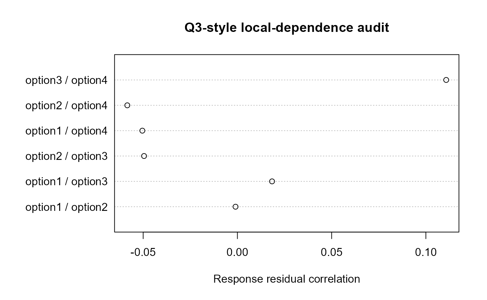

Multiple-Response Items, Revisiting, and Local Dependence
Source:vignettes/multiple-response-and-revisiting-irt-0-7.Rmd
multiple-response-and-revisiting-irt-0-7.RmdWhy preserve the response process?
Multiple-response items can contain substantially more information
than a single total or partial-credit score. A participant who selects
A + C and a participant who selects B + D may
receive the same conventional score while showing very different
option-level response and visual-inspection patterns. The 0.7
development layer therefore preserves response combinations before any
scoring rule is imposed.
long <- data.frame(
participant_id = rep(c("p1", "p2"), each = 4),
item_id = "item1",
option_id = rep(c("A", "B", "C", "D"), 2),
selected = c(TRUE, FALSE, TRUE, FALSE,
FALSE, TRUE, FALSE, TRUE)
)
encode_response_combinations(long)
#> participant_id item_id response_combination n_selected
#> 1 p1 item1 A|C 2
#> 2 p2 item1 B|D 2Option-level process evidence
When option AOIs are available, the analysis can retain
fixation/dwell evidence at exactly the same option level as selection.
fit_multiple_response_process_irt() provides a transparent
crossed-logistic reference model and an explicit external engine
gate.
fit <- fit_multiple_response_process_irt(
option_trials,
selected = "selected",
theta = "theta",
item = "item_id",
option = "option_id",
gaze = "option_dwell_ms",
engine = "reference"
)The reference model is not the MRM/MRM-LD likelihood
of Zhou and Guo. It is provided to establish the data contract, generate
empirical diagnostics, and support validation before an exact
implementation is connected. For a validated exact implementation, use
engine = "external" and retain engine/version
provenance.
Local dependence must be checked
Inter-option local dependence can invalidate an analysis that treats
option responses as conditionally independent. If residuals from the
response model are available,
audit_process_local_dependence() provides a Q3-style
pairwise diagnostic. An aligned process-residual matrix can be supplied
to ask whether response and gaze residual dependence show the same pair
structure.
set.seed(1)
r <- matrix(rnorm(400), ncol = 4,
dimnames = list(NULL, paste0("option", 1:4)))
p <- r + matrix(rnorm(400, sd = .3), ncol = 4)
ld <- audit_process_local_dependence(r, p)
head(ld$pairs)
#> first second response_residual_correlation response_flag
#> 1 option1 option2 -0.0009943199 FALSE
#> 2 option1 option3 0.0183821868 FALSE
#> 3 option2 option3 -0.0495362135 FALSE
#> 4 option1 option4 -0.0504370615 FALSE
#> 5 option2 option4 -0.0584224680 FALSE
#> 6 option3 option4 0.1107803403 FALSE
#> process_residual_correlation process_flag concordant_direction
#> 1 0.006688086 FALSE FALSE
#> 2 0.055551769 FALSE TRUE
#> 3 -0.083047142 FALSE TRUE
#> 4 -0.013512184 FALSE TRUE
#> 5 -0.073464541 FALSE TRUE
#> 6 0.030193207 FALSE TRUE
plot(ld)
The threshold is descriptive. It is not a universal significance cutoff and must be interpreted with the fitted model, item design, multiplicity, and a simulation-calibrated null distribution.
Revisiting as collateral evidence in cognitive diagnosis
Current process-data work also shows that response time and item revisiting can be modeled alongside cognitive-diagnosis responses. The eyeprocess adapter keeps mastery semantics anchored to the supplied Q-matrix and uses revisiting, RT, and optional gaze variables as collateral process evidence.
cdm <- fit_revisit_process_cdm(
response_matrix = Y,
q_matrix = Q,
process_data = process_log,
person_id = "participant_id",
revisited = "revisit_count",
rt = "response_time_ms",
gaze = c("stem_dwell_ms", "option_transition_count")
)A process association must not be interpreted as a diagnosis of motivation, misconduct, or cognitive state. The appropriate scientific question is whether the process channel improves validated measurement or classification under pre-specified external/grouped validation.
Validation requirements
Before either model family is promoted, include at least
response/attribute recovery, local-dependence misspecification, option
sparsity, process-channel ablation, negative controls, and
held-person/item/session/device validation. Use
irt_validation_spec(),
stress_test_local_dependence(),
process_channel_ablation(), and
grade_model_evidence() to retain a common evidence
record.